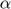
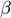
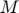

Contents
function SingPRWithInjCurr = SingIntegODE23PRWithInjCurr_db(aPR,uAmpsPermsecCm2,delay,Tend,VdsOut,VsThresh,SomaInj,termaftevent,varargin)
% 5/22/2015
What it does:
Intgegrates the polarized PR neuron and applies a current ramp This rouitne uses ODE 23 although ODE45 has also been used. ODE 23 was found to be faster than ODE45 and the solutions were identical to within machine precision.
Dependencies
- GateEquil.m
- GateTimeConst.m
- Kinetic gating variables  and  functions 12 total 6 and 6 for each of m,n,h,s,c,q
Inputs
- aPR -- is a structure class defined by using InitPR
- uAmpsPermsecCm2 -- is the slope of the injected current ramp note units this is M/1000, Where  is per sec
- delay -- ms of delay before ramp starts
- Tend -- maximum time ode runs
- VdsOut -- the polarization expressed in potential difference outised cell from dendrite to soma
- VsThresh --the soma potential at which spike is said to occure and TTFS is measured
- SomaInj -- If true injected current ramp goes into soma if False it is injected into dendrite
- termafterevent -- to terminate after Vs passes through VsThresh applied to dendrite
Optional Inputs
- varargin{1} = RelTol. Integrator specifications
- varargin{2} = +AbsTol*. Integrator specifications
- varargin{3} = MaxStep. Maximum step siez.
User Inputs for integration parameters.
Note an event function is specified
tstart1=tic; UseDefault=true; if nargin == 0 options = odeset('RelTol',1e-4,'Stats','off','MaxStep',1e-1,'Refine',4,'Events',@events,... 'OutputSel',1); elseif nargin == 1 options = odeset('RelTol',varargin{1},'Stats','off','MaxStep',1e-1,'Refine',4,'Events',@events,... 'OutputSel',1); elseif nargin == 2 options = odeset('RelTol',varargin{1},'AbsTol',varargin{2},'Stats','off','MaxStep',1e-1,'Refine',4,'Events',@events,... 'OutputSel',1); elseif nargin == 3 options = odeset('RelTol',varargin{1},'AbsTol',varargin{2},'Stats','off','MaxStep',1e-1,'Refine',4,'Events',@events,... 'OutputSel',1); end % if UseDefault==true % options = odeset('RelTol',1e-4,'Stats','off','MaxStep',1e-1,'Refine',4,'Events',@events,... % 'OutputSel',1); % else % aRefine=1; % aRelTol=1e-6; % aMaxStep=1e-2; % options = odeset('RelTol',aRelTol,'Stats','on','MaxStep',aMaxStep,'Refine',aRefine,'Events',@events,... % 'OutputSel',1); % end %tic past=0; %initialize the falg for wether or not a spike has occured
Initial state of ODE set prior to this subroutine and stored in aPR.SS
multPRInitY=zeros(1,8); multPRInitY(1,1)=aPR.SS.NumSS(1); multPRInitY(1,2)=aPR.SS.NumSS(2); multPRInitY(1,3)=aPR.SS.NumSS(3); multPRInitY(1,4)=aPR.SS.NumSS(4); multPRInitY(1,5)=aPR.SS.NumSS(5); multPRInitY(1,6)=aPR.SS.NumSS(6); multPRInitY(1,7)=aPR.SS.NumSS(7); multPRInitY(1,8)=aPR.SS.NumSS(8);
Undefined variable aPR. Error in SingIntegODE23PRWithInjCurr_db (line 74) multPRInitY(1,1)=aPR.SS.NumSS(1);
Reshape to use in MATLAB integrator
multPRInitYCol=zeros(8,1); multPRInitYCol=reshape(multPRInitY,8,1);
Call Ode23 to integrate function defined in PR94NoSyn
[T,YMultcol,te,ye,ie] = ode23(@(t,Y) PR94NoSyn(t,Y),[0 Tend],multPRInitYCol,options); % SingPRWithInjCurr is the structure containing the results of the % integration with metadat like the filename date and run time. SingPRWithInjCurr.te = te; SingPRWithInjCurr.ye = ye; SingPRWithInjCurr.ie = ie; SingPRWithInjCurr.YMultcol=YMultcol; SingPRWithInjCurr.T = T; SingPRWithInjCurr.etime=toc(tstart1); SingPRWithInjCurr.datetime=datestr(now); SingPRWithInjCurr.file=mfilename; SingPRWithInjCurr.PR=aPR; SingPRWithInjCurr.NumN=1; SingPRWithInjCurr.uAmpsPerCm2=uAmpsPermsecCm2; SingPRWithInjCurr.VdsOut=VdsOut; SingPRWithInjCurr.Tend=Tend; SingPRWithInjCurr.delay=delay; if isempty(te) SingPRWithInjCurr.idxteVs=size(T,1); else SingPRWithInjCurr.idxteVs=find(T>=te(1,1),1,'First'); end %toc SingPRWithInjCurr.etime=toc(tstart1); SingPRWithInjCurr.datetime=datestr(now); SingPRWithInjCurr.file=mfilename; function dY = PR94NoSyn(t,Y) Nn=sqrt(size(Y,1)); Y = reshape(Y,1,8); if t > delay if SomaInj==true if(Y(1,1) >= VsThresh | past == 1) Isinj =aPR.Isinj; past = 1; else Isinj=aPR.Isinj+heaviside(t-delay)*uAmpsPermsecCm2*(t-delay); end Idinj=aPR.Idinj; else if Y(1,1) >= VsThresh Idinj =aPR.Idinj; else Idinj=aPR.Idinj+heaviside(t-delay)*uAmpsPermsecCm2*(t-delay); end Isinj=aPR.Isinj; end else %t less than delay Isinj=aPR.Isinj; Idinj=aPR.Idinj; end Cm=aPR.Cm; gL=aPR.gL; gNa=aPR.gNa; gKDR=aPR.gKDR; gKC=aPR.gKC; gKAHP=aPR.gKAHP; gCa=aPR.gCa; ENa=aPR.ENa; %CHECK not sure this is good idea to double the # variable inside function to be integrated Ek=aPR.Ek; EL=aPR.EL; ECa=aPR.ECa; p=aPR.p; gc=aPR.gc; WRT=aPR.WRT; Vsyn=aPR.Vsyn; MaxS=aPR.MaxS; dY = zeros(1,8); % a column vector dY(1) = (1/Cm)*(-gL*(Y(1)-EL)-gNa*MInfPR94(Y(1),WRT).*Y(4).*(Y(1)-ENa)-gKDR*Y(5).*(Y(1)-Ek)... +(gc/p)*(Y(2)-Y(1)+VdsOut)+Isinj/p); dY(2) = (1/Cm)*(-gL*(Y(2)-EL)-gCa*(Y(2)-ECa).*Y(6).^2-gKAHP*Y(8).*(Y(2)-Ek)-gKC*Y(7).*Chi(Y(3)).*(Y(2)-Ek)... + gc/(1-p)*(Y(1)-Y(2)-VdsOut)+Idinj/(1-p)); dY(3) = -0.13*gCa*(Y(2)-ECa).*Y(6).^2-0.075*Y(3); dY(4) = (GateEquil(alphah(Y(1),WRT),betah(Y(1),WRT))-Y(4))./GateTimeCnst(alphah(Y(1),WRT),betah(Y(1),WRT)); dY(5) = (GateEquil(alphan(Y(1),WRT),betan(Y(1),WRT))-Y(5))./GateTimeCnst(alphan(Y(1),WRT),betan(Y(1),WRT)); dY(6) = (GateEquil(alphas(Y(2),WRT),betas(Y(2),WRT))-Y(6))./GateTimeCnst(alphas(Y(2),WRT),betas(Y(2),WRT)); dY(7) = (GateEquil(alphac (Y(2),WRT),betac(Y(2),WRT))-Y(7))./GateTimeCnst(alphac(Y(2),WRT),betac(Y(2),WRT)); dY(8) = (GateEquil(alphaq(Y(3)),betaq)-Y(8))./GateTimeCnst(alphaq(Y(3)),betaq); dY = reshape(dY,8,1); end function CaSatChi= Chi(Ca) CaSatChi = min(Ca/250,1); end function MInfsqr = MInfPR94(Vs,WRT) alp=alpham(Vs,WRT); bet=betam(Vs,WRT); MInfsqr = GateEquil(alp,bet).^2; end function [value,isterminal,direction] = events(t,y) % Locate the time when potential passes through zero in a % decreasing direction and stop integration. value = y(1)-VsThresh; % Detect Soma = 10 if termaftevent==true isterminal = 1; % Stop the integration else isterminal = 0; % Keep going end direction = 1; % positive direction only end
end